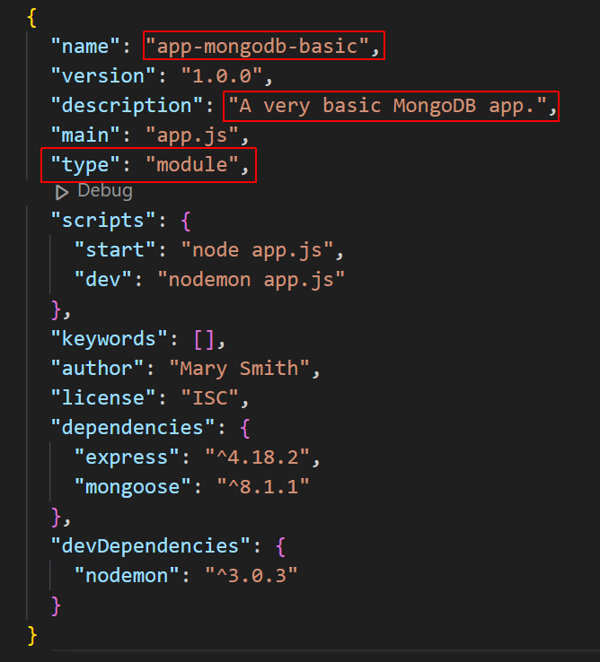
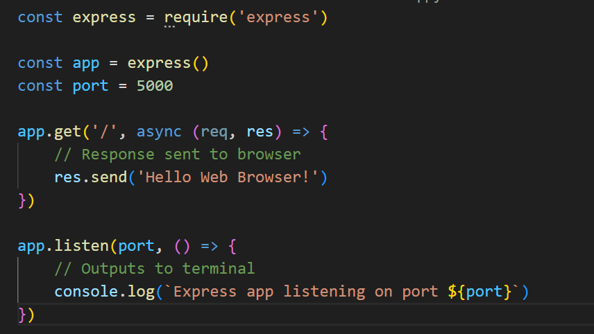
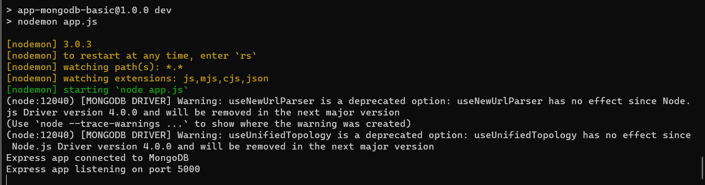

Learning Goals
At the end of this Tutorial, you will be able to:
- Use a provided connection string to connect an Express app to your account on MongoDB Atlas.
About Express to MongoDB connections
You have two main options for connecting an Express app to a MongoDB database:
- Native MongoDB client module: Because it does not require you to define a schema, this option offers more flexibility in working with different types of data. However, you may end up writing more boilerplate code for CRUD operations and other common tasks. And the lack of built-in schema validation means you have to handle validation yourself.
- Mongoose module: With its Object Data Modeling (ODM), this option makes it easier to work with MongoDB as an object-oriented database and simplifies complex query building. Also Mongoose offers middleware and pre/post hooks for operations. And it provides a 'populate' feature that supports easy referencing between different documents (similar to JOIN in SQL databases).
For the above reasons, the Mongoose option is used throughout these Tutorials.
Creating a folder structure
Before continuing, close any Node.js apps that may be running on your machine. Also close any open terminals.
Create a folder structure for your Express-powered and MongoDB-connected app. See below.

In the /app-mongodb-basic subfolder, copy and paste the /client and /server subfolders from your /app-express-basic project folder.

You may have named the two folders as /frontend and /backend. And the /server or /backend folder as /api or /apis.
Installing Mongoose
Follow the steps below:
- Open a Command prompt or VS Code Terminal, and navigate to the folder that holds your app. For example:
cd apps-mongodb/app-mongodb-basic/server - Install the Mongoose module locally as follows:
npm i mongoose - Open your package.json file and update it for your MongoDB app. 
Because you have now defined your app type as a module, you can use the import rather than require() syntax in your app.js file.
Creating a config.js file
You will next create a file to hold some constant values for your app.
- Create a new text file, paste in the following code, and save the file as config.js in your app folder:
export const PORT = 5000; export const mongoDBUri = "<your-connection-string>; - You may use any valid port number. Add your own connection string.
You obtained your MongoDB connection string in the previous Tutorial. Note that the string does not specify a particular database.
Updating your app.js file
Your final task is to update your Express app to connect to MongoDB Atlas.
- Open the basic Express app.js file you copied and pasted. It should look like that shown below. 
- Update the app code as follows and save the file:
import express from 'express' import { PORT, mongoDBUri } from './config.js'; import mongoose from 'mongoose'; const app = express() app.get('/', async (req, res) => { // Response sent to browser res.send('Hello Web Browser!') }) async function connectToMongoDB() { try { await mongoose.connect((mongoDBUri), { useNewUrlParser: true, useUnifiedTopology: true }); console.log('Express app connected to MongoDB'); app.listen(PORT, () => { console.log(`Express app listening on port ${PORT}`) }) } catch (error) { console.error('Could not connect to MongoDB', error); } } connectToMongoDB(); - Finally, in your terminal, start your new Express/MongoDB app:
npm run dev
Your terminal window should look as follows:
And you should see the following in your web browser for your chosen port number.

Reviewing the Express/MongoDB app code
Let's examine the code for this basic Express/MongoDB app.
As in a previous Tutorial, your Express application is stored in the app variable.
const app = express()Also as before, you have used the app.get() method to create a route that will respond to GET requests to your app's home page.
app.get('/', async (req, res) => {
// Response sent to browser
res.send('Hello Web Browser!')
})And again, your app is listening to requests on your chosen port.
app.listen(PORT, () => {
console.log(`Example app listening on port ${PORT}!`)
})This time, however:
- Your app.listen() method is wrapped inside a try...catch block, so that it runs only if a connection to the MongoDB has been successful.
- This outer try...catch is wrapped inside a function that is called at the end of the app.js file.